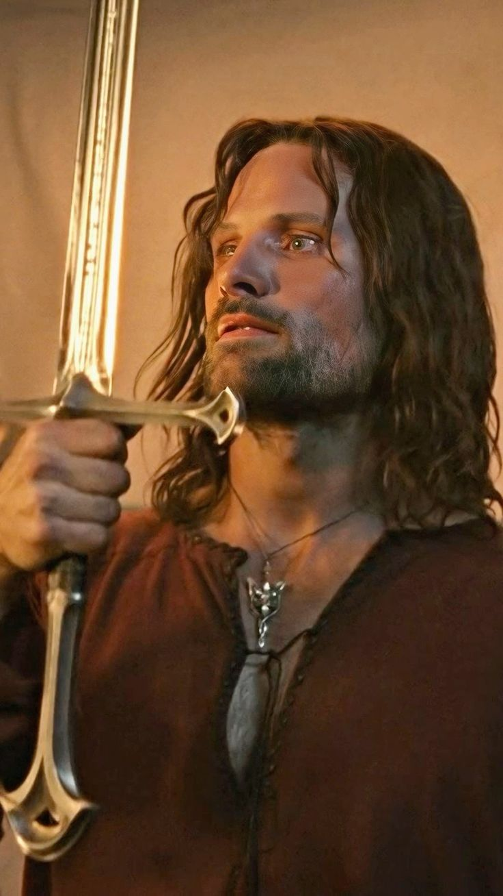

.jpg)

Viggo Mortensen
Viggo Mortensen es un actor, director y artista multifacético nacido el 20 de octubre de 1958 en Nueva York. A lo largo de su carrera ha destacado por su versatilidad y compromiso con los personajes, pero su papel más emblemático es, sin duda, el de Aragorn en la trilogía cinematográfica de The Lord of the Rings.
Mortensen se unió al proyecto dirigido por Peter Jackson en una etapa relativamente tardía del casting, reemplazando a otro actor poco antes del inicio del rodaje. A pesar del desafío, logró construir un Aragorn profundamente humano: un líder noble pero atormentado por sus dudas, heredero de un linaje real que teme no estar a la altura de su destino.
Para dar vida al personaje, Mortensen se involucró intensamente en la producción: realizó muchas de sus propias escenas de acción, practicó esgrima y equitación, e incluso incorporó detalles personales como portar siempre su espada fuera del set. Su interpretación aportó una mezcla única de fuerza, humildad y melancolía, convirtiendo a Aragorn en uno de los héroes más memorables del cine contemporáneo.